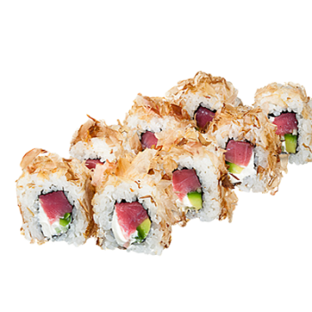
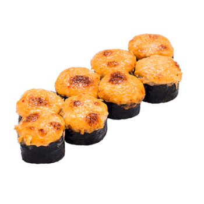

Каліфорнія Класік

авокадо, свіжий огірок, кунжут, рис, норі, сурімі Білків 14.26 г Жирів 16.84 г Вуглеводів 54.28 г Калорійність 337.82 ккал
Філадельфія з тунцем в стружці тунця
Стружка тунця, тунець, вершковий сир, авокадо свіжий, рис, водорості норі Енергетична цінність: 299 Ккал. Жири: 6, Білки: 12, Вуглеводи: 69
Рол з лососем

Рис, водорості норі, лосось Енергетична цінність: 209 Ккал. Жири: 2,9 Білки: 8,2 Вуглеводи: 37
Запечений футомак з вугрем
норі, рис, крем-сир, спайсі соус, вугор, унагі соус, кунжут